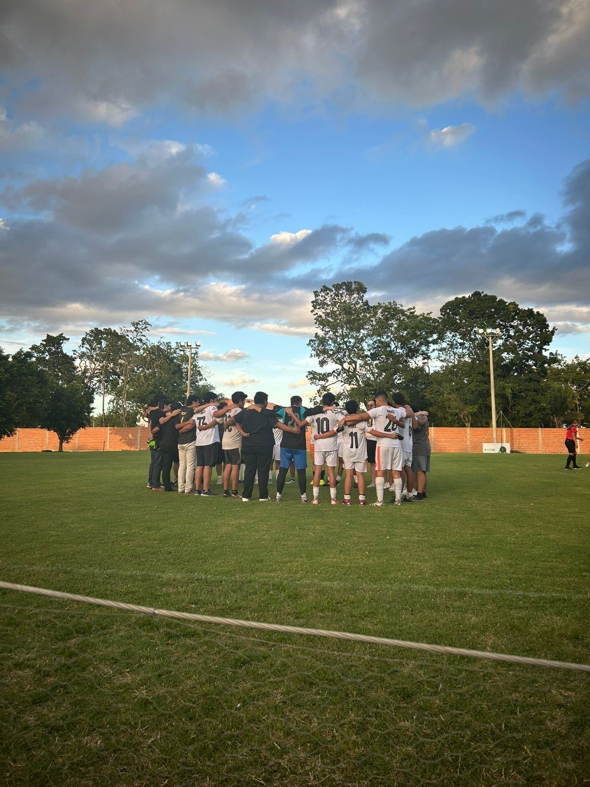
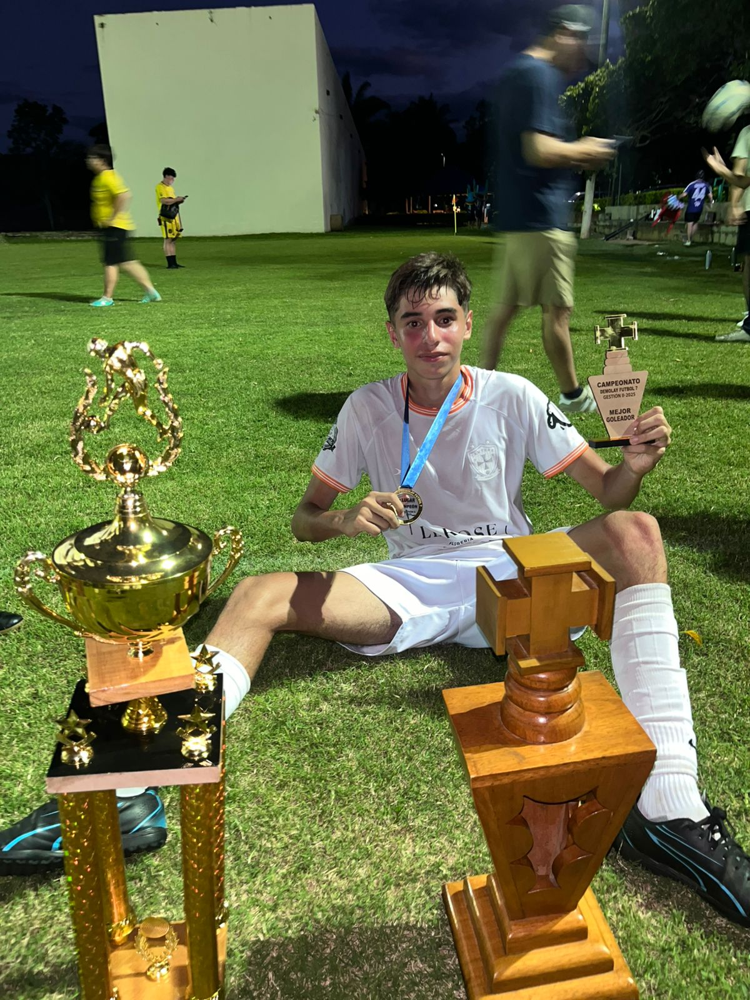
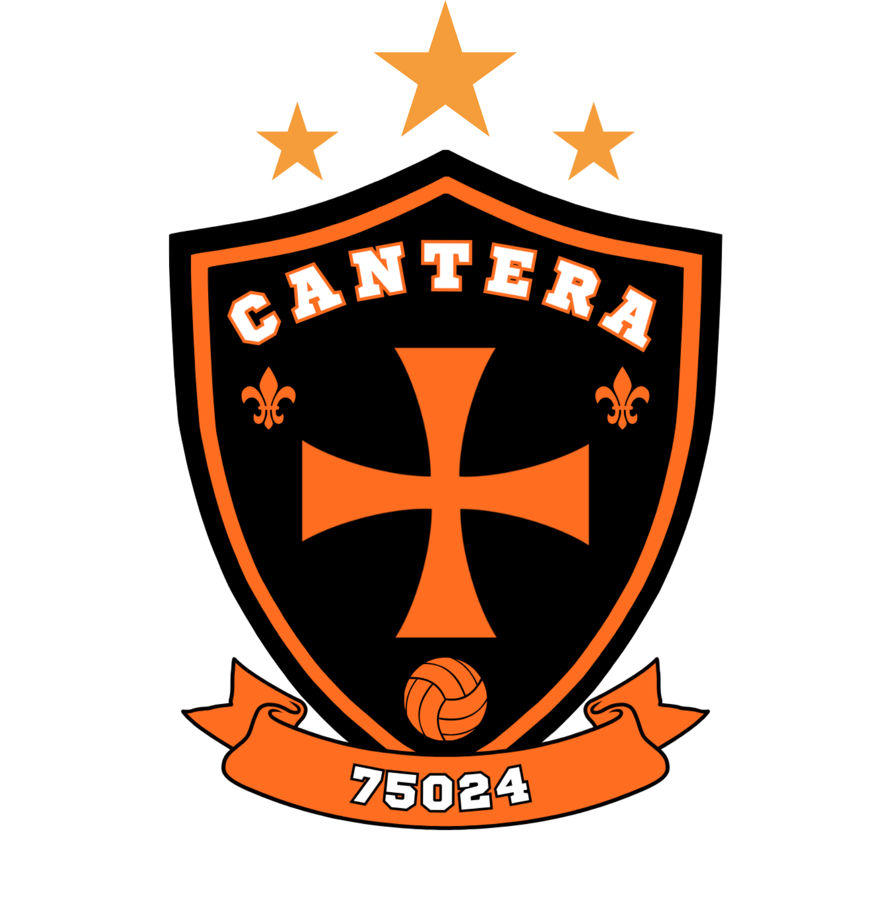

Campeonato de fútbol 7
Gloria en la cancha
La historia de un equipo forjado en hermandad, disciplina y una racha de victorias que define nuestro espíritu.
Nuestro legado
Un legado de campeones
A lo largo de su historia, el Capítulo Cantera no solo ha destacado por su labor formativa, sino también por su espíritu competitivo. Nuestros hermanos han demostrado que los principios DeMolay también se viven en la cancha, a través del trabajo en equipo, la disciplina y el esfuerzo.
Este espíritu nos llevó a consagrarnos como bicampeones del Torneo Deportivo DeMolay en 2016 y a una victoria aplastante en la gestión II/2025, consiguiendo el tricampeonato de forma invicta.
Hitos inolvidables
Tres momentos que nos definen
Gestión I/2016
Victoria en una final cargada de intensidad y honor.
Gestión II/2016
Consolidación del bicampeonato frente a un rival destacado.
Gestión II/2025
Un equipo invicto que ganó la final 3-0, demostrando un nivel de juego excepcional.
“El Capítulo Cantera jamás ha perdido una final, un reflejo de nuestra hermandad y determinación.”
Símbolos de nuestra pasión
Nuestro escudo
Tres estrellas por nuestros campeonatos, la cruz de la Orden y los colores que defendemos con honor.

